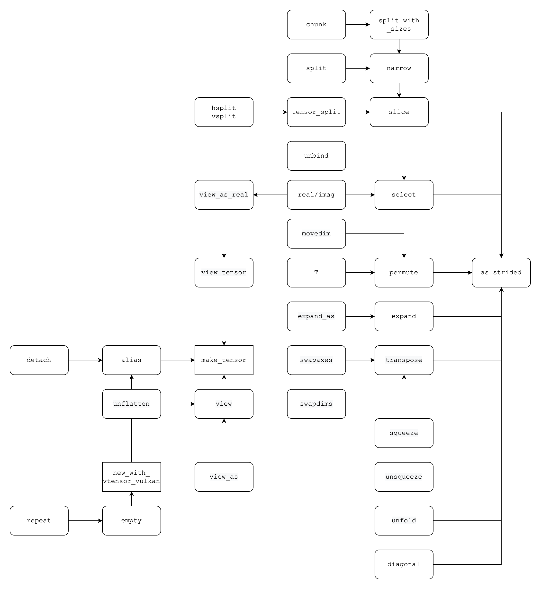

1.
ray
❱
1.1.
overview
1.2.
gcs
1.3.
raylet
1.4.
api
2.
pytorch
❱
2.1.
tensor
2.2.
profiler
3.
paddle
❱
3.1.
ps
4.
horovod
❱
4.1.
run
4.2.
workflow
4.3.
object
4.4.
develop
4.5.
pytorch
4.6.
tensorflow
5.
python
❱
5.1.
concurrent execution
Light (default)
Rust
Coal
Navy
Ayu
Aller au boulot
tensor
The dependancy of tensor related API

Tensor view explication